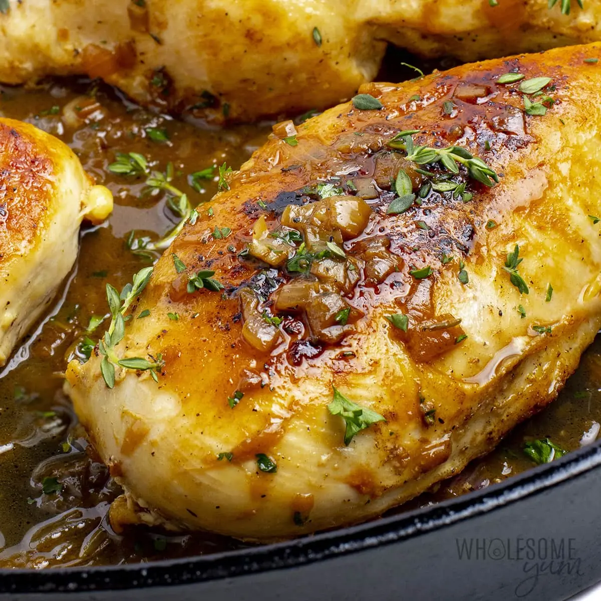

Pan-Seared Chicken with Shoestring Fries
- Serves4
- Ingredients10
- Steps6

Ingredients
- 1 large Yukon Gold potato
- 3 tablespoons grapeseed oil
- Kosher salt and freshly ground pepper
- Canola oil, for frying
- 4 boneless, skinless chicken breasts
- 7 tablespoons unsalted butter
- 9 sprigs fresh thyme
- 2 cups chicken stock
- 1/4 cup heavy cream
- Fresh cilantro leaves, for garnish
Directions
- Peel the potato and use a spriral cutter to cut the potato into thin noodles. Cut the noodles crosswise into matchstick-length pieces. (Alternatively, use a knife to cut the potato into matchsticks.) Pat the potatoes dry, toss them with 1 tablespoon of the grapeseed oil, and season with salt and pepper.
- Pour at least 2 inches of canola oil into a large, heavy-bottomes pot. Heat over medium-high heat to 350ºF. Add the potato pieces and fry until golden brown and crispy, 2 to 3 minutes. Using a slotted spoon, transfer the fries to a paper towel-lined plate and let cool
- Preheat the oven to 350ºF.
- Season the chicken breasts with salt and pepper. In a large, oven-safe pan, heat the remaining 2 tablespoons grapeseed oil over medium high-heat. Add the chicken and cook until browned on both sides, 2 to 3 minutes per side. Add 4 tablespoons of the butter and 6 sprigs of the thyme, spooning the butter over the chicken breasts as it melts. Transfer the pan to the oven and roast until the chicken is cook through, about 5 minutes.
- In a medium saucepan, bring the stock and the remaining 3 sprigs thyme to a simmer over medium-high heat. Whisk in the cream and return to a simmer. Remove the pan from the heat and whisk in the remaining 3 tablespoons butter. Season with salt and pepper.
- To serve, place a chicken breast in the center of each four plates. Spoon the cream sauce over the chicken and garnish with cilantro. Serve with the crispy shoestring fries.
Recipe credit: the MasterChef Junior cookbook by Christina Tosi